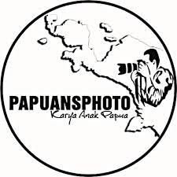

Selamat Datang di Portfolio Saya
Menjelajahi dunia kode dan desain untuk menciptakan solusi digital yang inovatif dan fungsional.
Lihat Proyek SayaTentang Singkat
Meson Wakerkwa
Mahasiswa / Web Developer
Saya adalah seorang mahasiswa yang bersemangat dalam pengembangan web dan teknologi. Saya memiliki minat besar pada desain UI/UX dan rekayasa perangkat lunak. Saat ini saya sedang mendalami berbagai teknologi modern untuk membangun aplikasi yang lebih baik.
Lihat Selengkapnya
Jadwal M.K
| No | Hari | Jam | M.K | Ruang | Nama Dosen | Pictures |
|---|---|---|---|---|---|---|
| 1 | Senin | 13:00 - 14:40 | Prak. Sistem Basis-Data | Lab 02 | Debby Maureen Talumewo S.T,. S.Kom | |
| 2 | Kamis | 13:00 - 14:40 | Prak. Struktur Data | Lab 02 | Surianti S.Kom,. M.Kom |  |
| 3 | Selasa | 08:00 - 10:00 | Sistem Basis-Data | R. 102 | Debby Maureen Talumewo S.T,. S.Kom | |
| 4 | Rabu | 13:00 - 15:00 | Kewirausahan | R. 304 | Fushy Dian Shantika Rumsarwir SE,. M,Ak | |
| 5 | Kamis | 13:00 - 15:00 | Matematika Diskrit | R. 303 | Amris S.Si,. M,Si | |
| 6 | Jumaat | 10:00 - 12:00 | Rekayasa Prangkat Lunak | R. 304 | Andi Gita Novianti S.Kom,. MT |  |
| 7 | Rabu | 08:00 - 10:00 | Sistem Cerdas | R. 306 | Dr. Tanwir S.T,. M.T | |
| 8 | Kamis | 10:00 - 12:00 | Komunikasi Data & Jaringan Komputer | R. 303 | ABD Rachman Dayat S.Kom,. M.Kom | |
| 9 | Rabu | 08:00 - 09:40 | prak. Sistem Cerdas | Lab 02 | Dr. Tanwir S.T,. M.T | |
Aktivitas
Code Politan
CodePolitan
Saya Aktif | 2025 - Sekarang
Saya Aktif di CodePolitan cara belayarnya sangat muda di pahami. & saat ini masih aktih di codepolitan...
Fotografer
Fotografer
Saya aktif Di Forografer | 2025 - Sekarang
Saya aktif di Balobe Fotografi Papua Foto Bertanggung jawab sebagai anggota Fotografer Meningkatkan skil berbagai bidang category.
Proyek
Sistem Informasi Perpustakaan
Aplikasi web untuk manajemen peminjaman dan pengembalian buku di perpustakaan kampus.
Website Portfolio Pribadi
Desain dan pengembangan website portfolio pribadi yang responsif menggunakan teknologi modern.
Hubungi Saya
Tertarik untuk berkolaborasi atau sekadar menyapa? Jangan ragu untuk menghubungi saya melalui email atau media sosial.
Kirim Email